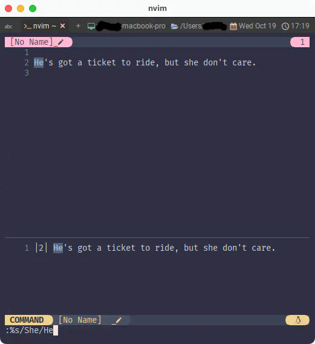
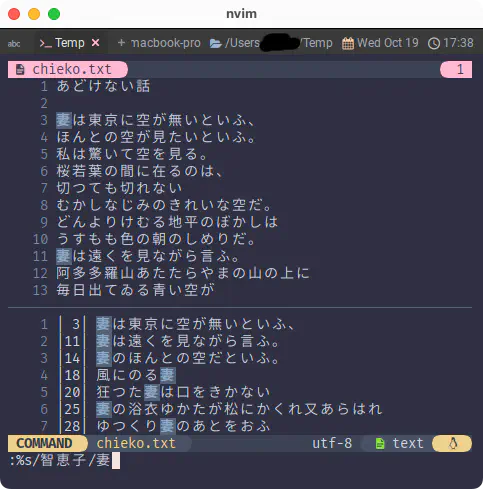
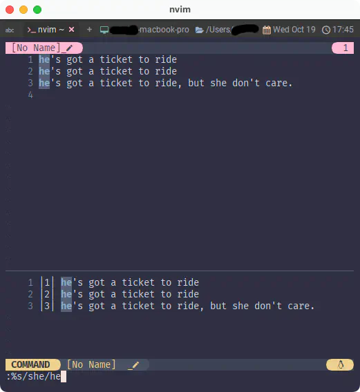
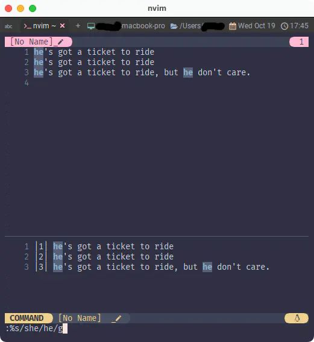

inccommand
検索の次は置換ですよね〜😆
'inccommand' 'icm'
'inccommand' 'icm' string (default "nosplit")
global
Possible values:
nosplit Shows the effects of a command incrementally in the
buffer.
split Like "nosplit", but also shows partial off-screen
results in a preview window.
受け取る値
nosplit コマンドの効果をバッファにインクリメンタルに表示する。
split "nosplit" に加えて、画面外の結果を部分的にプレビューウィンドウに表示する。
じゃあ、また動かしてみましょう。
これ Karen が歌ったら面白いんじゃない？😆 ってなるのはなんかもう必然の Richard なので、 "She" 👩を "He" 👨に変えます。1
置換操作は:%s/{検索値}/{置換値}とすると実行できます。
:%s/She/He
画面下にプレビューウィンドウが出るようになりました。

ちょっとこれだとあんまり威力を感じられないんですが、画面に収まってない部分もプレビューできるのが強みです。

下のようになってたとして、(だいぶ強引ですが) 大文字を含まない "she"でやった場合にあれれー❓ってなるの気付きます？

そうです。3行目に "she"は2つあるのに、1つ取りこぼししちゃってます😱
実はこのやり方だと同じ行の中では最初にヒットしたところしか反応しません。
こういう場合は、
:%s/she/he/g
...と、gオプションを追加してあげると期待通りの結果が得られます。

割とあるシチュエーションだと思うので、覚えておくと役に立ちます😉
1
The Carpenters の
デビュー曲はTicket to Rideのアレンジでした。これが1969年のお話。
Richard がviとかで歌詞置換してたらウケる〜🤣 とか思って見たらviですら初版が1976年...。
NeovimどころかVimどころか、viですら意外と新しい😲 ...そうでもないかぁ😮